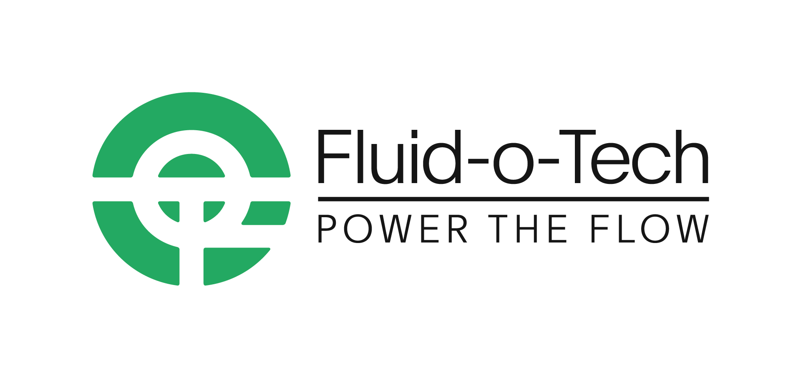
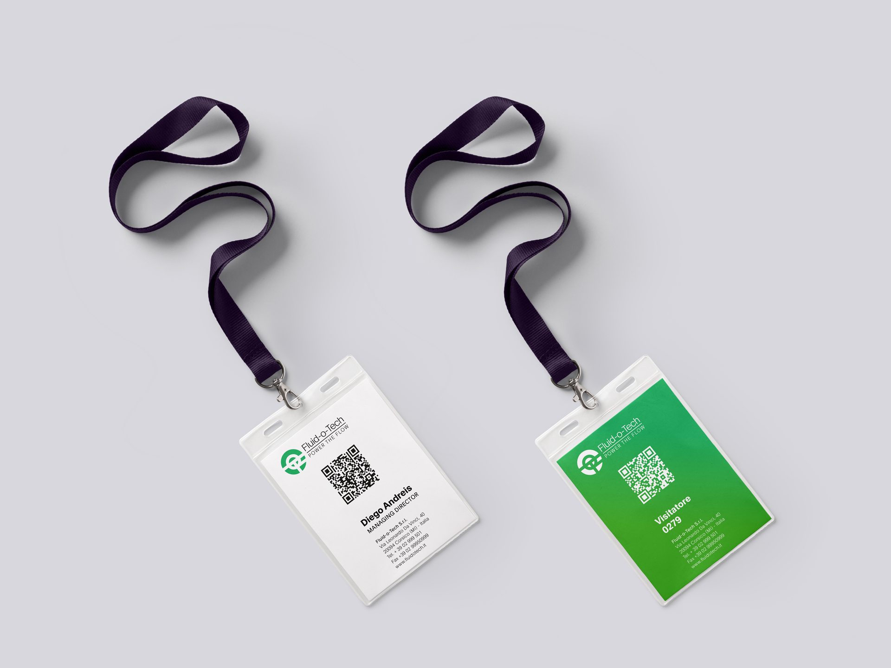
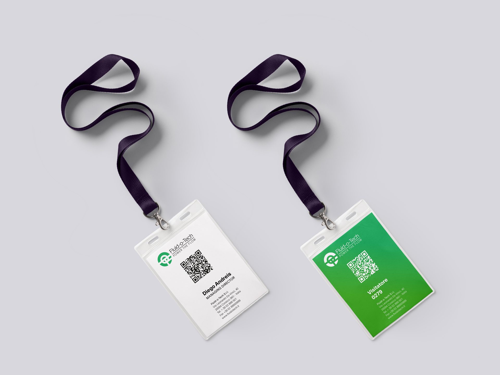
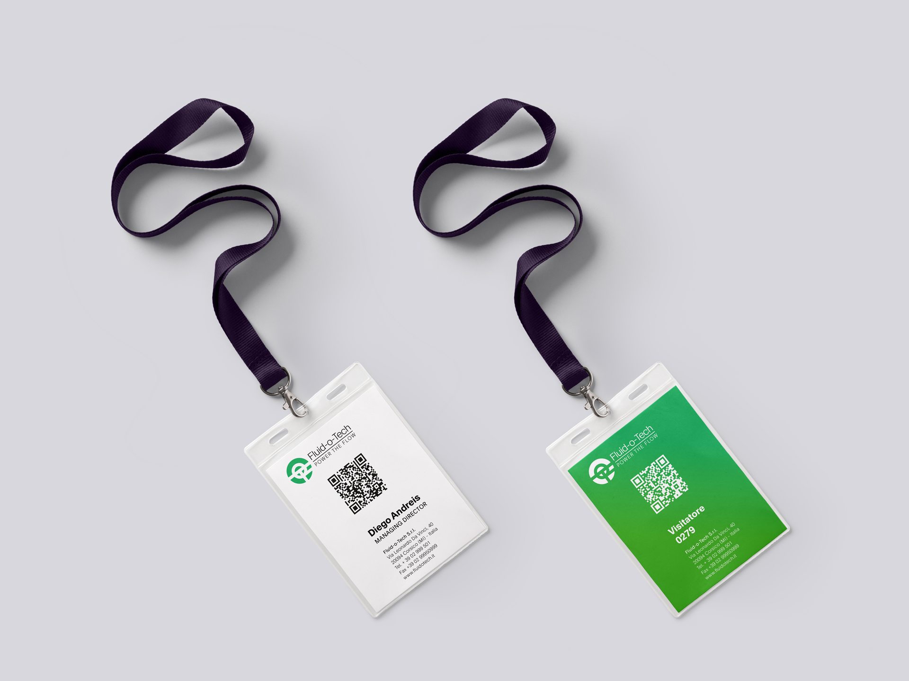

 


On the occasion of the company’s 70th anniversary we redesigned a strong, contemporary and impactful visual system for Fluid-o-Tech.
We optically optimized the logotype and introduced a new more contemporary and clearer font. The chromatic palette includes different shades of green in order to give a dynamic and airy style.
Inspired by Fluid-o-Tech’s “Power the flow”, the main visual is designed starting from the idea of particle flows, where their overlap creates dynamic and animated visual solutions. These visuals, generated by an open-source graphic animation tool, describe sinusoidal trajectories on different levels with different widths. The depth effect is obtained through various blur degrees of the original flows.
The “flow theme” was used in the preliminary study of the customization project of some spaces of the headquarters. We proposed a continuous, open and inclusive communication system that thrills and communicates to visitors the innovation, people and story of the company.
We optically optimized the logotype and introduced a new more contemporary and clearer font. The chromatic palette includes different shades of green in order to give a dynamic and airy style.
Inspired by Fluid-o-Tech’s “Power the flow”, the main visual is designed starting from the idea of particle flows, where their overlap creates dynamic and animated visual solutions. These visuals, generated by an open-source graphic animation tool, describe sinusoidal trajectories on different levels with different widths. The depth effect is obtained through various blur degrees of the original flows.
The “flow theme” was used in the preliminary study of the customization project of some spaces of the headquarters. We proposed a continuous, open and inclusive communication system that thrills and communicates to visitors the innovation, people and story of the company.